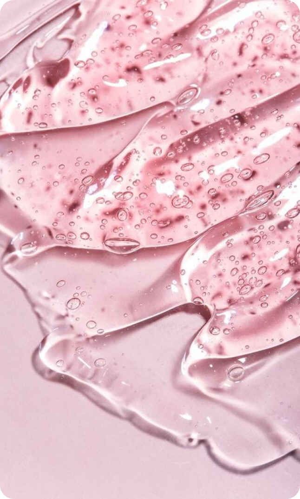
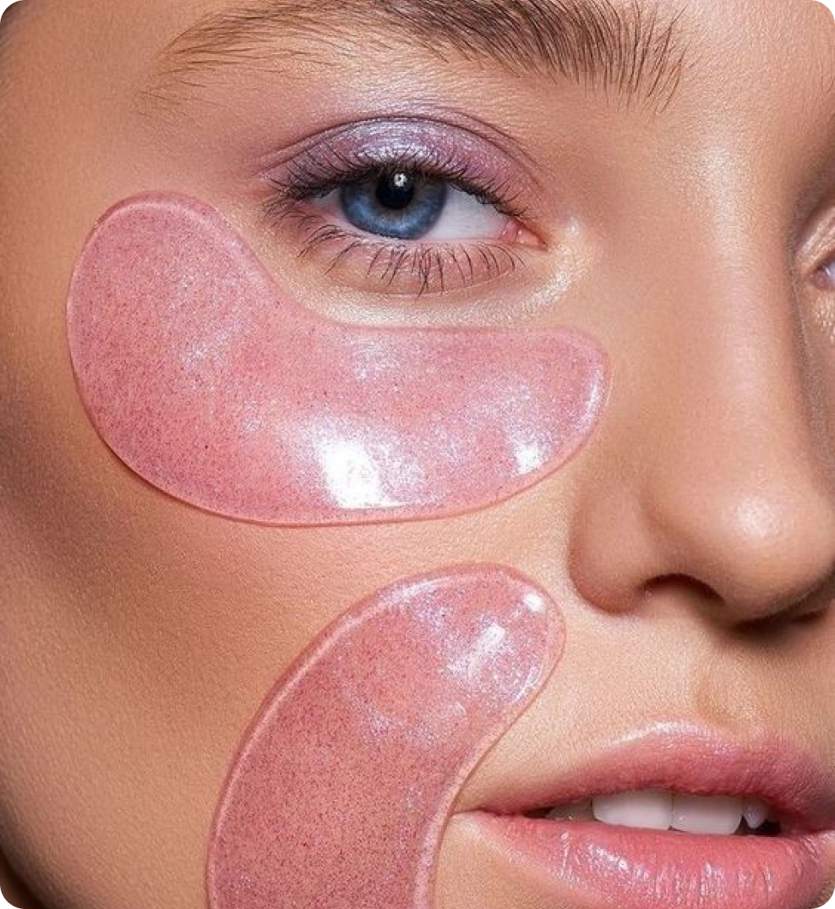

24 марта 2024
средства
Патчи для глаз - это средства, которые стали очень популярными благодаря своей эффективности в борьбе с признаками усталости, отечности и темных кругов под глазами. Постоянные недосыпы, неправильное питание и нервная работа — все это способствует появлению под глазами темных кругов. Сегодня поговорим про средство, которое поможет с этим бороться и расскажем, действительно ли оно эффективно.
Описание
Патчи для глаз предназначены для устранения признаков усталости, отечности и темных кругов под глазами, а также для увлажнения и питания нежной кожи вокруг глаз. Они помогают разгладить мелкие морщинки, уменьшить отечность и придать коже свежий и отдохнувший вид. Эти средства особенно полезны для тех, кто страдает от хронической усталости, часто испытывает стресс или проводит много времени за компьютером.
Патчи — это небольшие тканевые или гидрогелевые масочки, наносящиеся под глаза. Они действуют благодаря активным компонентам, содержащимся в их составе. Обычно это масла, экстракты растений, алоэ вера, гиалуроновая кислота и другие увлажняющие и питательные ингредиенты. При нанесении патчей на кожу они создают защитный барьер и возвращают коже под глазами свежий и отдохнувший вид.
Патчи с правильно подобранным составом действительно могут оказать быстрый и заметный эффект, однако виден он будет только до тех пор, пока не закончится действие активных веществ. А вот чтобы получить долгосрочный эффект, рекомендуем немного изменить образ жизни, наладив режим сна и питания.
 
Применение
Патчи подходят для любого типа кожи, чтобы выбрать подходящие нужно только определиться, какой эффект вы хотите получить. Для осветления кожи рекомендуется брать патчи с экстрактом лакричника, ниацинамидом, арбутином, койевой или транексамовой кислотой в составе. Для увлажнения и разглаживания кожи хорошо подойдут гиалуроновая кислота, пептиды, морской коллаген. С уменьшением кругов под глазами помогут кофеин, ниацинамид, ацетил гексапептид‑5.
Для получения эффекта нанесите патчи на кожу под глазами и оставьте на указанное на упаковке количество времени.